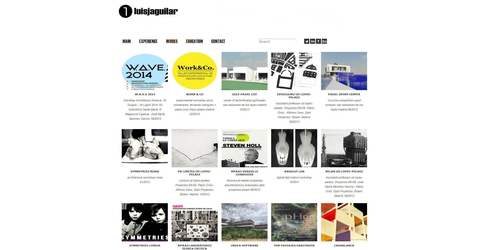

	
		
<div style="margin-top:50px;">
	<div class="container-fluid">
	
		<div class="col-xs-12 col-sm-2 col-md-2 col-lg-2">
			<h2 id="project-title">Luis J Aguilar</h2>
			<p id="project-client">Portafolio Arquitectura</p>
			<p id="project-tags">WordPress</p>
		</div>
		<div class="col-xs-12 col-sm-3 col-md-3 col-lg-3">
			<p>Portafolio de Arquitectura</p>
			<p>Se ha usado un template con diseño limpio y claro, adaptado a todos los dispositivos.</p>
		</div>
		<div class="col-xs-12 col-sm-7 col-md-7 col-lg-7">
				<div class="thumbnail"></div>
		</div>
	</div>
</div>

